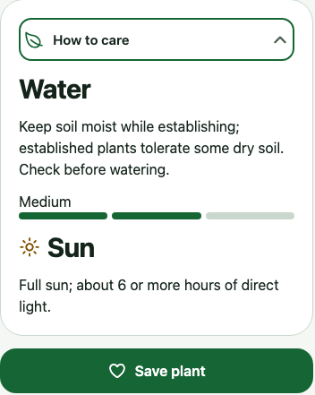

05 · Keep a plant to revisit
Your garden
can be a field guide.
Plant profile›Sign in if needed›Save plant
You can save a plant you observe without owning or planting it.
1. Read How to care
Find one care detail; check Sources → NC State Extension.
2. Sign in, reopen, and save
Reopen the built-in result from Search. Choose Save plant.
3. Return through My Garden
Open the saved plant you plan to observe.

MeetConnectReturnCare
Study guide · practice here is not saved in the app
Try it in Plantopedia
Plant profile → Sign in → Save plant → My Garden
- Save a supported species you can revisit. It does not have to be sunflower or a plant you own.
- Wait for Already saved, then find it in My Garden.
- Open Sources and follow NC State Extension to inspect the basis for the information.
Does saving a plant mean I planted it?
No. My Garden also holds plants you observe. Use I planted this only for a real planting, after checking local suitability.